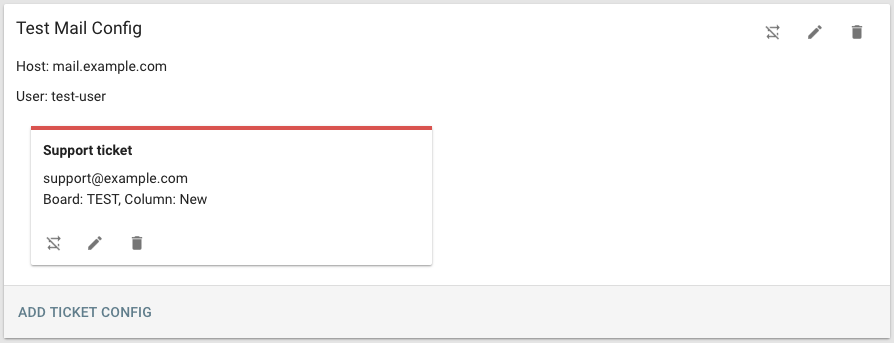
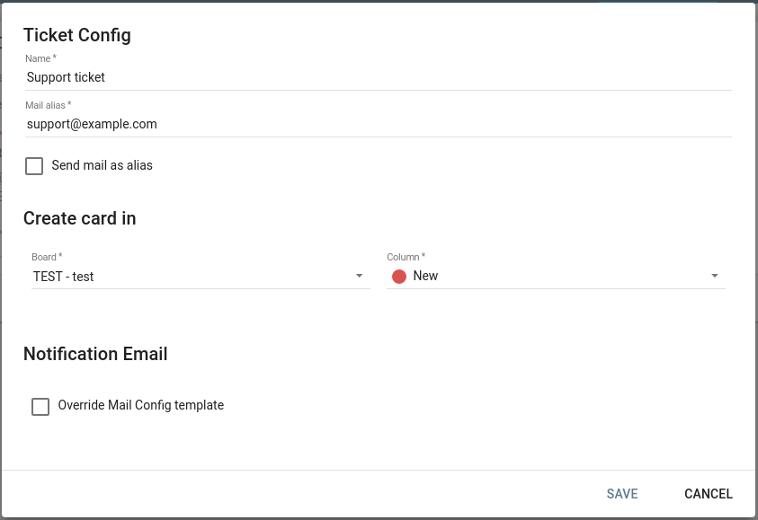

- 3.12Create tickets via E-mail
- 3.12.1Manage ticket E-mail configuration
- 3.12.1.1Create mail configuration
- 3.12.1.2Add ticket configuration
- 3.12.1.3Edit configurations
- 3.12.1.4Enable/Disable configuration
- 3.12.1.5Delete configuration
- 3.12.2Support localized E-Mail notifications
- 3.12.1Manage ticket E-mail configuration
3.12Create tickets via E-mail
Lavagna supports creating cards via E-mail.
3.12.1Manage ticket E-mail configuration
To manage mail ticket, go to the Project Settings, and then the “Mail Ticket” tab.

3.12.1.1Create mail configuration
To add a new mail configuration, click on the plus button.
Fill the dialog with the following information:
Name: A name identifying the configuration
Inbound Config: The E-mail account Lavagna reads from.
- Protocol: Mail server protocol. One from: IMAP, IMAPS, POP3, POP3S. We recommend using IMAPS.
- Host: Mail server address
- Port: Mail server port
- User: Mail account username
- Password: Mail account password
- Properties: Properties for the Java Mail client. One property per line.
Outbound Config: The E-mail account Lavagna uses to notify the user a new ticket has been created.
- Protocol: Mail server protocol. One from: SMTP, SMTPS.
- Host: Mail server address
- Port: Mail server port
- User: Mail account username
- Password: Mail account password
- From: What to send the E-Mail as.
- Properties: Properties for the Java Mail client. One property per line.
Notification E-Mail: The content of the notification E-Mail sent to the user.
- Subject: The subject of the notification E-Mail. Use the identifier to reference the created card.
- Body: The content of the notification E-Mail. Supports markdown. Use to reference the display name or address of the user creating the ticket, and to reference the created card.
Then click Save.
3.12.1.2Add ticket configuration
Once a mail configuration is added, click “Add Ticket Config”. A dialog will appear.

- Name: A name identifying the ticket configuration
- Alias: The address this configuration should read E-Mails from. If no alias is configured on the E-Mail account, use the address.
- Send mail as alias: Whether to send the notification E-Mail using the configured alias.
- Create card in: Configure where the card is created.
- Board: Select a board
- Column: Select a column in the selected board
- Notification E-Mail: The content of the notification E-Mail sent to the user.
- Override Mail Config Template: Override the subject and body configured in the Mail Config
- Subject: The subject of the notification E-Mail. Use the identifier to reference the created card.
- Body: The content of the notification E-Mail. Supports markdown. Use to reference the display name or address of the user creating the ticket, and to reference the created card.
Then click “Save”.
3.12.1.3Edit configurations
Use to edit both mail configuration and ticket configuration. See the previous section to find details about each parameter.
3.12.1.4Enable/Disable configuration
Single ticket configuration can be enabled or disabled, or entire mail configuration. When a mail configuration is disabled, no ticket configuration will be processed.
To enable, click .
To disable, click .
3.12.1.5Delete configuration
To delete a configuration, click .
NOTE: mail configuration with one or more ticket configuration can’t be deleted.
3.12.2Support localized E-Mail notifications
By taking advantage of the possibility to override notification templates for a specific alias, it’s possible
to create a more customized experience for users in different language regions.
An organization can have a generic Mail Config (e.g. support@organization.com) with a english notification template.
A default ticket configuration using support@organization.com as alias, with “Override Mail Config Template” left unchecked will cover international users.
Then, a set of aliases (e.g. support-es@organization.com, support-fr@organization.com) can share the same mail account (support@organization.com),
but by using different aliases can send localized mail notification, while still creating cards in the same column as any other ticket config.
While this solution requires the duplication of some configuration, in our opinion it improves the experience of the end users.